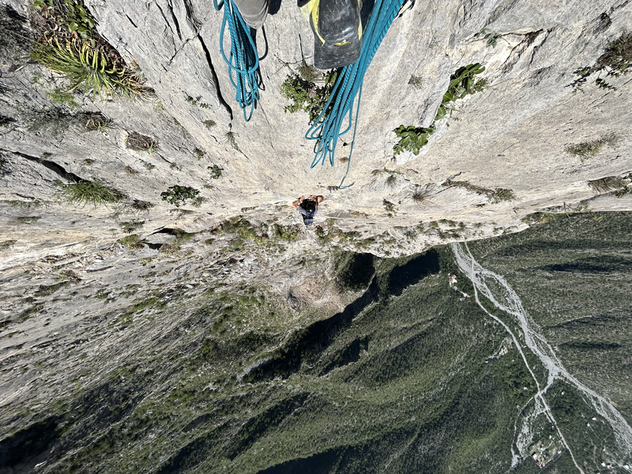
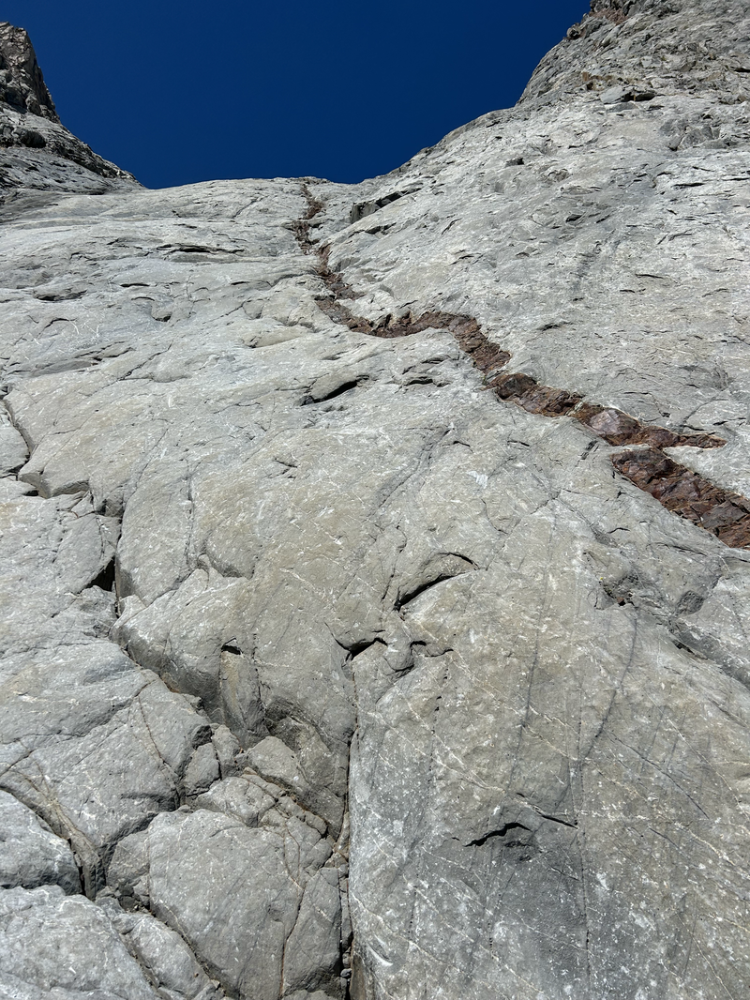
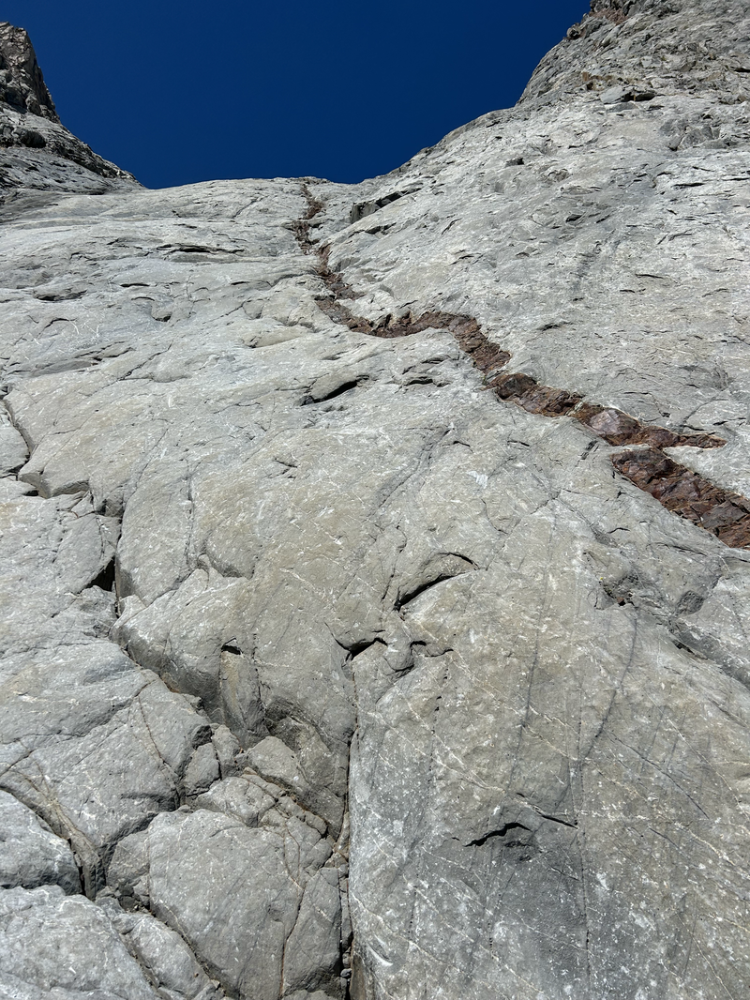

Hello!

Welcome to my website! Here you can find information about my research and personal endeavors. I am a researcher in applied robotics working with Professor Colleen Josephson at UC Santa Cruz. I received my M.S. in Electrical and Computer Engineering in 2024 at UC Santa Cruz, where I was advised by Steve McGuire and Colleen Josephson. My work involved designing a quadruped robot system to create highly accurate 3D reconstructions of redwood forests and estimate tree diameters using a novel neural vision technique. My research interests are in sustainable robot applications for smart farming and precision agriculture. I am also interested in the intersection of computer vision, SLAM, and deep learning. Outside of work, I am an adventure seeker at heart, finding joy on cliff sides and mountains. I also love to spend time playing guitar with friends.
Papers
Tree Localization and Diameter Estimation in Coastal Redwood Forests using Neural Radiance Fields
A. Korycki, Masters Thesis
Precise ecological assessment of forest environments relies on acquiring dense, accurate spatial reconstructions. Point clouds serve as the leading form of three-dimensional (3D) forest representation and have been successfully used to recover important structural parameters of trees, namely diameter at breast height (DBH). Point cloud generation has traditionally relied on photogrammetric or Light Detection and Ranging (LiDAR) sensing modalities. Neural Radiance Fields (NeRFs), a recent innovation in artificial intelligence and computer vision, enable point cloud generation from a neural network trained on a sparse set of 2D images. This thesis presents an evaluation of three point cloud generation methods for the purpose of tree localization and DBH estimation in a coastal redwood forest. The first method uses lidar-inertial Simultaneous Localization and Mapping (SLAM) and serves as the state-of-the-art comparison. The two remaining methods generate neural-implicit scene geometry by training a NeRF on visual and SLAM data sourced from mobile phone and robot platforms. The results present an exciting avenue for rapid ecological assessment of forest environments using community-sourced mobile phone imagery as an alternative to expensive lidar sensing.
Evaluating geometric accuracy of NeRF reconstructions compared to SLAM method
A. Korycki, C. Josephson, S. McGuire, Arxiv preprint
As Neural Radiance Field (NeRF) implementations become faster, more efficient and accurate, their applicability to real world mapping tasks becomes more accessible. Traditionally, 3D mapping, or scene reconstruction, has relied on expensive LiDAR sensing. Photogrammetry can perform image-based 3D reconstruction but is computationally expensive and requires extremely dense image representation to recover complex geometry and photorealism. NeRFs perform 3D scene reconstruction by training a neural network on sparse image and pose data, achieving superior results to photogrammetry with less input data. This paper presents an evaluation of two NeRF scene reconstructions for the purpose of estimating the diameter of a vertical PVC cylinder. One of these is trained on commodity iPhone data and the other is trained on robot-sourced imagery and poses. This neural-geometry is compared to state-of-the-art lidar-inertial SLAM in terms of scene noise and metric accuracy.
El Potrero Chico, Mexico
High Sierra, California

 
